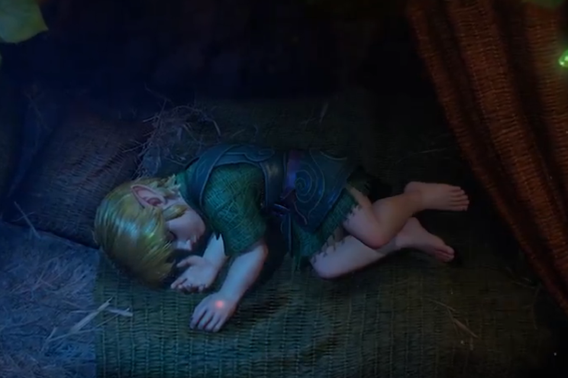

Zelda Ocarina of Time Remake Confirmed for Nintendo Switch 2 — Full Trailer Breakdown, October 2026 Release Window, Platform History & Everything We Know

📋 Table of Contents
On June 9, 2026, Nintendo dropped one of the most anticipated announcements in modern gaming history during its latest Nintendo Direct broadcast. The Legend of Zelda: Ocarina of Time — widely regarded as one of the greatest video games ever created — is officially getting a full ground-up remake for Nintendo Switch 2. After years of fan petitions, industry speculation, and hopeful rumors, the confirmation has finally arrived: Link, Zelda, and Ganondorf are returning to Hyrule in a completely rebuilt experience designed from scratch for Nintendo's most powerful home console to date.
The original Ocarina of Time launched on November 21, 1998, on the Nintendo 64. It went on to sell over 7.6 million copies worldwide, earned a 99/100 score on Metacritic — a record that stood for years — and is consistently cited as the single most influential 3D action-adventure game ever made. The game defined an entire genre. Its Z-targeting combat system, open world exploration, dual-timeline narrative, and iconic musical mechanics set standards that developers worldwide followed for more than two decades. Now, nearly 28 years after its debut, Nintendo is giving that legend the full remake treatment it deserves.
This is not a remaster. This is not a port. This is not a resolution upgrade slapped onto the Nintendo 3DS version. What Nintendo has confirmed is a complete rebuild from the ground up — the most ambitious revisit to Ocarina of Time in its entire history. Here is everything we know.
What Nintendo Announced at the June 9 Direct — Ocarina of Time Remake Confirmed
The moment arrived midway through Nintendo Direct on June 9, 2026 — a broadcast that the gaming community had been buzzing about for weeks following credible pre-show leaks suggesting a landmark Zelda announcement was imminent. When the title card finally appeared on screen, the reaction across streaming platforms, social media, and gaming forums was immediate and overwhelming.
Nintendo's announcement trailer was unlike most modern game reveals. Rather than opening with a cinematic engine showcase or a gameplay montage, the trailer presented a tapestry-style animated retelling of Ocarina of Time's story — a deliberate artistic choice that evoked the look of illuminated medieval manuscripts and ancient storybook illustrations. The familiar opening notes of Saria's Song played over sweeping visuals of Kokiri Forest, Hyrule Field, Death Mountain, and Zora's Domain, all depicted in a richly stylized painterly format.
The trailer was unmistakably designed to trigger nostalgia and emotional recognition rather than demonstrate technical capability. For longtime fans, hearing that iconic ocarina melody paired with imagery of Hyrule's most beloved locations was enough to generate enormous excitement. For newer players unfamiliar with the original, it functioned as an atmospheric introduction to one of gaming's most storied worlds.
Actual gameplay was nearly absent from the reveal. The sole moment widely identified as in-game footage showed Young Link asleep in his treehouse in Kokiri Forest, with the Triforce symbol glowing softly on the back of his hand — a visual echo of the game's iconic opening dream sequence. That brief clip lasted approximately three seconds. Beyond that, no combat, no dungeon exploration, no NPC interactions, no UI elements, and no environmental traversal footage were shown.
Nintendo officially confirmed the following during the Direct: the game is exclusively for Nintendo Switch 2, it is a full ground-up rebuild rather than a port or visual enhancement, and it is targeting a 2026 release window. No specific launch date, pricing structure, or pre-order availability was announced at the time of the reveal.
Forbes senior gaming contributor Paul Tassi noted that community reaction split sharply between those thrilled by the game's existence and those frustrated by how little was shown. The sparse reveal, while strategically deliberate on Nintendo's part, left many fans feeling that a game of this magnitude deserved a more substantial introduction.
Ocarina of Time Remake — Everything We Know So Far
Despite the announcement trailer's cinematic restraint, a clearer picture of the Ocarina of Time remake has begun to emerge from Nintendo's official materials, post-Direct statements, and patterns established by the company's recent Switch 2 launch strategy.
It Is a True Ground-Up Rebuild: Nintendo's language during the Direct and in subsequent press materials was deliberate and specific. The Switch 2 version is not Ocarina of Time 3D — the acclaimed 2011 Nintendo 3DS remake developed by Grezzo — ported to a new platform with upscaled resolution. This is an entirely new production. That means new character models built from scratch, completely redesigned environments rendered with modern lighting and geometry, a reworked audio mix, and potentially updated gameplay mechanics. The ambition here appears comparable to major remake projects in the wider industry, such as Capcom's Resident Evil 4 Remake or Square Enix's Final Fantasy VII Remake — titles that honored their originals while fundamentally rebuilding every system.
Visual Direction and Art Style: The limited footage available suggests Nintendo is pursuing a visual approach that balances nostalgia with modern production quality. The tapestry-style animation in the trailer hints at an art direction that leans toward timeless stylization rather than photorealistic graphics — a choice that would align well with the original game's somewhat expressionistic N64 aesthetic. Whether the final in-game visuals match that trailer style or diverge toward something more realistic remains one of the most discussed questions among the fan community.
Will Gameplay Mechanics Be Modernized? This is the central question that no one can answer definitively yet. Ocarina of Time's core systems — Z-targeting combat, inventory management, Epona horseback traversal, ocarina melody puzzles — were groundbreaking in 1998 but have been iterated upon by three decades of subsequent game design. Whether Nintendo will preserve those systems exactly, refine them for modern expectations, or make more radical changes is unknown. The Ocarina of Time 3D version made relatively conservative adjustments; whether the Switch 2 remake will be equally respectful or more adventurous remains to be seen.
Why October 2026 Makes the Most Strategic Sense: Nintendo confirmed a 2026 launch window, which most industry analysts interpret as pointing toward an October release. Nintendo's most recent Switch 2 announcement — Star Fox — was revealed on May 6, 2026, and is scheduled to release on June 25, 2026, a gap of less than seven weeks. This rapid announce-to-launch cadence suggests Nintendo is comfortable surprising audiences close to release. Applying a similar timeline to a hypothetical late-summer Ocarina of Time showcase, an October 2026 release becomes highly plausible. Additionally, Grand Theft Auto 6 is widely expected to launch in fall 2026, and Nintendo would almost certainly want to avoid a direct calendar collision with what will likely be the biggest entertainment launch of the year.
Pricing and Pre-Orders: No pricing details were shared at the June 9 Direct. Given that Nintendo Switch 2 first-party titles have been launching at premium price points above the standard Switch price tier, industry observers expect the Ocarina of Time remake to fall in the range of $59.99 to $79.99 depending on the scope of the final product. Pre-order availability is expected to open closer to an official release date announcement.
Also Read
More Gaming Stories →The Complete History of Ocarina of Time — N64 (1998), GameCube, 3DS (2011), Switch Online, and Now Switch 2
To fully appreciate why the Switch 2 remake announcement carries the weight that it does, it helps to understand the journey The Legend of Zelda: Ocarina of Time has taken across nearly three decades of gaming hardware. This is not simply a beloved old game receiving a nostalgic refresh — it is one of the most critically and culturally significant pieces of interactive media ever created, and each new version has introduced it to a new generation of players.
| Version | Platform | Year | Key Addition |
|---|---|---|---|
| Original Release | Nintendo 64 | 1998 | 99/100 Metacritic; defined 3D action-adventure |
| Collector's Edition Port | GameCube | 2002 | Bundled re-release for new hardware buyers |
| Master Quest | GameCube | 2003 | Redesigned dungeons; first wide Western availability |
| Ocarina of Time 3D | Nintendo 3DS | 2011 | Ground-up visual rebuild by Grezzo; new UI; gyro aiming |
| N64 Emulated Version | Nintendo Switch Online | 2021 | Subscription access; no improvements |
| Ground-Up Remake | Nintendo Switch 2 | 2026 | Complete rebuild; most ambitious version to date |
Nintendo 64 — The Original Masterpiece (1998): Released on November 21, 1998, in North America, Ocarina of Time arrived as the first fully three-dimensional entry in the Zelda series. The Z-targeting system solved the fundamental problem of 3D combat. The dual-timeline narrative — moving between Young Link's present and Adult Link's darker future — delivered storytelling that few games of that era matched. The world of Hyrule felt genuinely vast and alive, and the game received perfect scores from Nintendo Power, IGN, and multiple other publications. It is widely considered the beginning of a new era in game design.
GameCube — Port and Master Quest (2002–2003): Ocarina of Time received its first notable re-release as part of The Legend of Zelda Collector's Edition on GameCube, bundled with early hardware purchases. In 2003, Master Quest followed — a remixed version featuring redesigned dungeons with altered puzzle layouts and increased difficulty. This was the first time most Western players could legally experience the alternate dungeon configurations that fundamentally change the game's back half.
Nintendo 3DS — Ocarina of Time 3D (2011): Released on June 19, 2011, and developed by Grezzo, the 3DS version was the most comprehensive revision of the game prior to this Switch 2 announcement. It featured substantially improved character models and textures, stereoscopic 3D support, gyroscope-based aiming, a redesigned UI, improved hint systems, and the Master Quest mode with mirrored dungeons. Critically acclaimed and commercially successful, Ocarina of Time 3D became the definitive version for an entire generation and remains highly regarded today.
Nintendo Switch Online — N64 Emulation (2021–Present): The original N64 version became available through the Nintendo Switch Online Expansion Pack. While accessibility was appreciated, this version offered no visual improvements, no gameplay refinements, and no additional content. It served primarily as a preservation option — not as the definitive experience.
Nintendo Switch 2 — The Ground-Up Remake (2026): The upcoming Switch 2 release is the most ambitious undertaking in Ocarina of Time's long history. Built entirely from scratch for Nintendo's most powerful hardware, this remake is positioned as the definitive version of the game — the release that supersedes all previous editions in terms of visual fidelity, production quality, and overall execution.
🎮 Key Takeaways
- The Legend of Zelda: Ocarina of Time Remake is officially confirmed for Nintendo Switch 2, announced during the June 9, 2026 Nintendo Direct broadcast.
- This is a full ground-up rebuild — not a remaster, port, or enhanced version of Ocarina of Time 3D for Nintendo 3DS.
- The announcement trailer was almost entirely a tapestry-style cinematic retelling; only approximately three seconds of apparent in-game footage was shown.
- Nintendo has confirmed a 2026 release window but has not announced a specific launch date; industry analysts widely expect October 2026.
- No pricing information, pre-order availability, or gameplay details have been officially confirmed beyond the initial announcement.
- Fan reaction has been a significant mix of genuine excitement and pointed frustration over the sparse nature of the reveal.
Fan and Industry Reaction — Excitement Mixed with Legitimate Frustration
The gaming community's response to the Ocarina of Time remake announcement has been one of the most layered reactions to a Nintendo reveal in recent memory. It is neither straightforward celebration nor straightforward disappointment — it is both, simultaneously, depending on which segment of the audience you are talking to.
The Excitement Is Real and Substantial: The Legend of Zelda: Ocarina of Time has a passionate, multi-generational fanbase unlike almost any other game in existence. For players who grew up with the N64 original in the late 1990s, this announcement represents something that once seemed impossible: a fully modern, rebuilt version of a game that shaped their relationship with the medium. The emotional resonance of that prospect cannot be easily overstated. Within hours of the Direct, fan art inspired by the tapestry trailer art style was circulating across social media. Discussion threads on major gaming subreddits broke comment records. The announcement trended globally on multiple platforms.
The Frustration Is Also Understandable: The primary criticism from a significant portion of the community targeted Nintendo's decision to reveal the game through what amounted to a short, gameplay-free cinematic. In an era where major game announcements routinely include extended gameplay demonstrations and developer commentary, a stylized animated teaser felt insufficient for a project of this magnitude. Fans who have been hoping for this remake for years wanted to see Hyrule Castle rebuilt in modern detail, hear the Water Temple's ambience rendered with contemporary audio design, and get some indication of how the combat system has evolved. None of that was present in the reveal.
Additional criticism centered on the broader context of Nintendo Switch 2's launch lineup. While the system has received praise for its hardware capabilities, some players and analysts have expressed concern that its exclusive game roster relies more heavily on remakes and ports of existing Nintendo properties than on wholly original new experiences. Some fans argue that a brilliant remake of a 28-year-old game does not adequately substitute for new first-party Nintendo entries that could push the Switch 2 forward as a platform for genuinely new creative work.
The Industry Perspective Is Largely Positive: From a business and market analysis standpoint, the Ocarina of Time remake is an extremely sound decision on Nintendo's part. Remakes of iconic titles with established fanbases consistently outperform sales projections — the evidence from Capcom's Resident Evil series, Square Enix's Final Fantasy VII Remake, and Bluepoint Games's PlayStation remake catalog makes this abundantly clear. Ocarina of Time occupies a position in gaming culture that few other titles match. Consumer demand for this product was effectively pre-established decades before Nintendo announced it.
Multiple gaming journalists and industry observers have also pointed to the sparse announcement as a deliberate strategic choice. Nintendo has increasingly adopted a policy of announcing games much closer to their launch window — the Star Fox example being the most recent illustration — which suggests the Ocarina of Time remake may be further along in development than the minimal teaser implied. The full showcase is coming. The June 9 Direct was simply the opening statement of a much longer story.
Frequently Asked Questions
Was the Zelda Ocarina of Time remake officially announced?
Yes, absolutely. Nintendo officially confirmed The Legend of Zelda: Ocarina of Time Remake for Nintendo Switch 2 during the June 9, 2026 Nintendo Direct broadcast. The company stated the game will launch by the end of 2026, though no specific release date has been provided. This is a full ground-up rebuild of the original 1998 Nintendo 64 game — not a remaster, not a port, and not a graphically enhanced version of the 2011 Nintendo 3DS edition developed by Grezzo.
What gameplay footage was shown for the Ocarina of Time remake?
Extremely limited footage was presented during the announcement trailer. The reveal relied almost entirely on a tapestry-style animated cinematic retelling of Ocarina of Time's story rather than demonstrating actual gameplay systems or in-engine visuals. The sole moment widely identified as genuine in-game content showed Young Link sleeping in his treehouse in Kokiri Forest as the Triforce symbol glowed on his hand — a sequence lasting approximately three seconds that mirrors the game's iconic opening dream sequence. No combat encounters, dungeon interiors, environmental traversal, NPC dialogue, or UI elements were shown at any point during the trailer.
When will the Ocarina of Time remake release?
Nintendo officially confirmed a 2026 release window without specifying an exact launch date. Based on the company's recently established pattern of announcing Switch 2 titles very close to their actual release — Star Fox for Switch 2 was announced May 6, 2026, and launches June 25, 2026, a gap of under seven weeks — and the strategic calendar need to avoid competing with Grand Theft Auto 6's widely anticipated fall 2026 launch, most industry analysts and informed observers expect an October 2026 release as the most likely window. A dedicated gameplay showcase or Nintendo Direct focused on the remake is expected sometime before that launch window opens.
How is this different from previous Ocarina of Time versions?
The Switch 2 release is a confirmed complete ground-up rebuild, making it the most significant reimagining of the game in its nearly 30-year history. Previous versions include the original N64 launch in 1998, the GameCube Collector's Edition port and Master Quest edition in 2002-2003, the critically acclaimed Ocarina of Time 3D by Grezzo for Nintendo 3DS in 2011, and the N64 emulated version via Nintendo Switch Online. The Switch 2 remake is expected to feature entirely new character models, redesigned environments, modernized gameplay mechanics, completely remastered audio and music, and potentially new content additions.
Why are some fans frustrated with the announcement?
Fan frustration stems from several interconnected concerns. Most immediately, the announcement trailer contained almost no actual gameplay footage. Players who have waited years for this remake wanted to see how the rebuilt Hyrule looks in motion, how the combat has evolved, and what the dungeon design looks like with modern production values. Beyond the specific trailer criticism, a broader concern exists about Nintendo Switch 2's first-party game strategy — some players feel the platform's most prominent titles lean too heavily on remakes and ports rather than delivering genuinely new creative experiences.
Will Nintendo show more of the Ocarina of Time remake before release?
Almost certainly. Nintendo's established pattern with major titles strongly suggests a dedicated gameplay Direct or Nintendo Treehouse Live showcase will be scheduled several weeks before the game's official release. Given that the June 9 announcement showed essentially nothing in terms of actual gameplay, a more substantial reveal — including confirmed release date, pricing, pre-order details, extended gameplay footage, and developer commentary — is expected before Nintendo can generate full pre-launch commercial momentum. Watch for a major summer or early fall Direct event where the remake is likely to receive the in-depth spotlight it deserves.
Conclusion
The official announcement of The Legend of Zelda: Ocarina of Time Remake for Nintendo Switch 2 represents one of the most culturally significant moments in Nintendo's recent history. For a game that defined an entire era of 3D game design when it launched on the Nintendo 64 in 1998, the opportunity to rebuild it from scratch on the company's most powerful hardware is an extraordinary undertaking — and the stakes could not be higher.
The announcement itself may have been deliberately minimal in scope. Nintendo has a well-established history of carefully managing anticipation through staged reveals, and the sparse tapestry-style teaser shown on June 9 fits that pattern precisely. The company demonstrated with Star Fox for Switch 2 that it is comfortable revealing major titles very close to their actual launch, which suggests the Ocarina of Time remake may be more complete than the brief reveal implied.
Whether you are a longtime Zelda fan who spent hundreds of childhood hours navigating the Water Temple, collecting Gold Skulltulas, and learning the melodies of the Song of Time — or a newer player who has only encountered Ocarina of Time through YouTube speedruns and retrospectives — this remake represents something genuinely rare: a chance to experience a landmark work of interactive art rebuilt for a new generation, on hardware that can finally do justice to the vision that the original development team conceived nearly three decades ago.
As the gaming world moves toward what is expected to be an October 2026 launch, the most important question is no longer whether the Ocarina of Time remake exists — that has been confirmed — but whether Nintendo's ground-up rebuild will deliver the quality, ambition, and emotional resonance that the original so magnificently achieved. The next major reveal will answer many of the questions that remain open. Until then, the return of Link to Hyrule on Switch 2 is now an established reality rather than a distant wish.

Marcus J. Holloway
Senior Tech & Gaming Editor
Technology and gaming journalist with 15+ years of experience covering Nintendo, Sony, and Microsoft platforms. Has tracked Zelda franchise developments across every generation from N64 to Switch 2. Dedicated to making complex gaming industry developments accessible to readers worldwide through Ultimate Schooling.
💬 Questions or Comments?
Have a question about this article or want to share your thoughts? Leave a comment below!